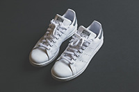
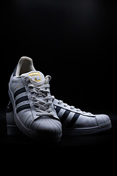
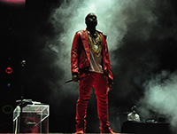
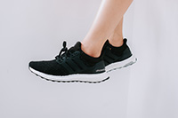
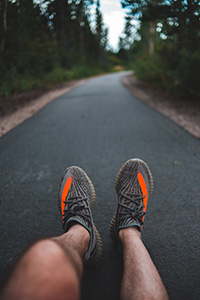

Adidas is founded on August 18, 1949, by Adi Dassler.
Following the 1952 Olympics, Adidas purchased the 3-stripe logo from a Finish athletic footwear brand.
In the 1954 World Cup the German team was set to face a nearly unbeatable Hungarian squad. Adidas created screw-in-studs to the pairs of German players’ cleats. This helped them win and generated an immense amount of awareness for the brand.
 Adidas first launches the Stan Smith sneaker. This is a tennis shoe named after the star tennis player Stan Smith. The silhouette is refined and minimal. Style wise it offers stability and utility. It will fit in with anything you might wear and can also work in more professional settings. This sneaker isn’t one that will stun anyone that sees it, but it will keep everything cohesive which makes it a must have.
Adidas introduced a tracksuit which generated a ton of buzz for the company who had been known exclusively for making shoes.
 The Adidas Superstar was released. This shoe features a leather upper with a rubber midsole and shell toe. It initially became a popular choice among NBA players to wear in game, however, it quickly expanded to everyone. It is a simple classic shoe. It comes in many different colors to fit whatever vibe you would need it for. This is a versatile shoe that looks nice and would complement almost anything you wear.
The introduction of the trefoil logo. Today this logo is tied into to Adidas Originals collection.
Adidas bought the Salomon Group and TaylorMade. The Salomon Group made ski apparel and TaylorMade was a golf brand. These acquisitions made it possible for Adidas to compete with Nike on a larger stage
Adidas buys Reebok.
 Kanye West first partners with Adidas to release Yeezys. This leads to a partnership that lasts a long time. Many more shoes and apparel are released over a hand full of years to come.
 The launch of the Adidas Ultraboost. This shoe is primarily a running shoe designed to provide ultimate comfort by taking discomfort away from different parts of the runner wearing the shoe. While it’s a running shoe, Adidas has released in many different color ways, making it attractive to most everyone. This is a shoe that can clearly provide comfort while also still delivering in the style department.
 Adidas releases the Yeezy Turtledove 350 boost. Kanye had been partnered with Nike for many years but decided to jump ship and collaborate with Adidas instead. This was the first shoe that came out of the partnership. It was an instant success. There are many more shoes that came during this time, some more wild than others. Many people might like this shoe because of its connection to Kanye, but it’s also different from what most other people wear. The Yeezy line can get expensive, especially on the resale market, so it’s important to try and get them on the retail release.